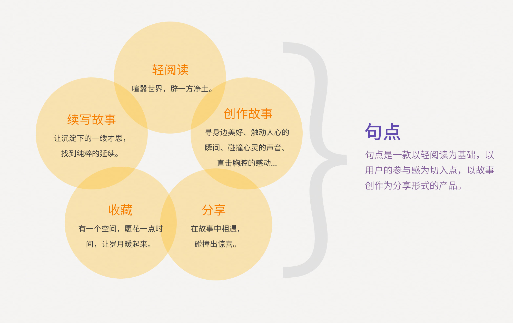
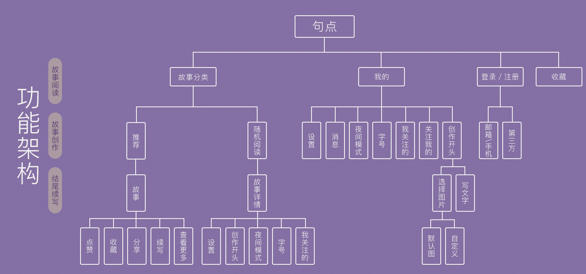
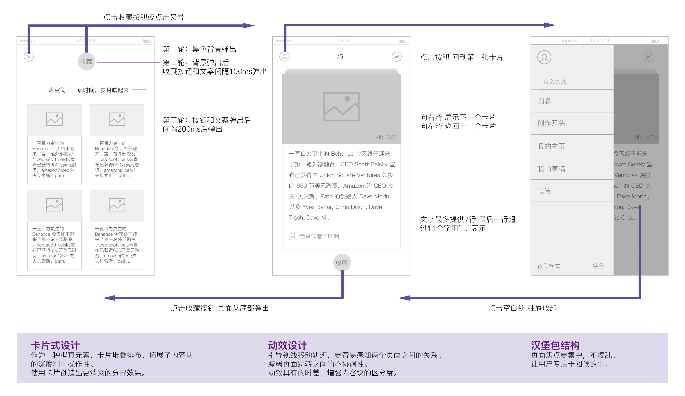
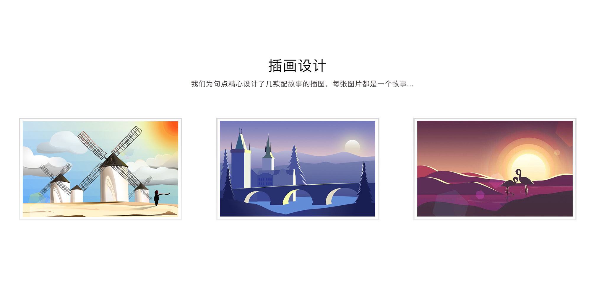
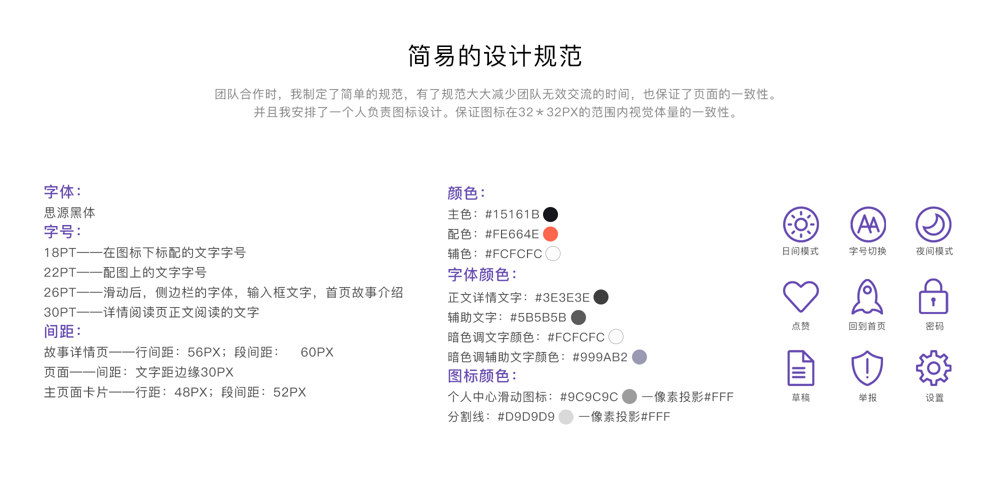

文字的力量
文学作为各类创作的源头，其衍生的潜力巨大，衍生的形式也十分多样：电影、电视剧、游戏、漫画等都是改编的方向。 围绕着网络文学的衍生，将会诞生一系列平台介入文学创作，为内容衍生全流程服务。 随着网络文学IP化发展，阅读平台更趋向于整合平台，读者和作者的界限愈发模糊，读者和作者之间的身份可以互相转换，激发全民参与创作。对一些人来说，缺少一个可以抒发情感，灵感汇集的平台。



主页面
扒拉扒拉扒拉扒拉

On the Cart
The shopper can filter the information he/she wants to see on the cart, which is synced with the hologram on the aisle. The shopper can save the recipe to his/her cart, and add the relevant ingredients to his/her grocery list.
